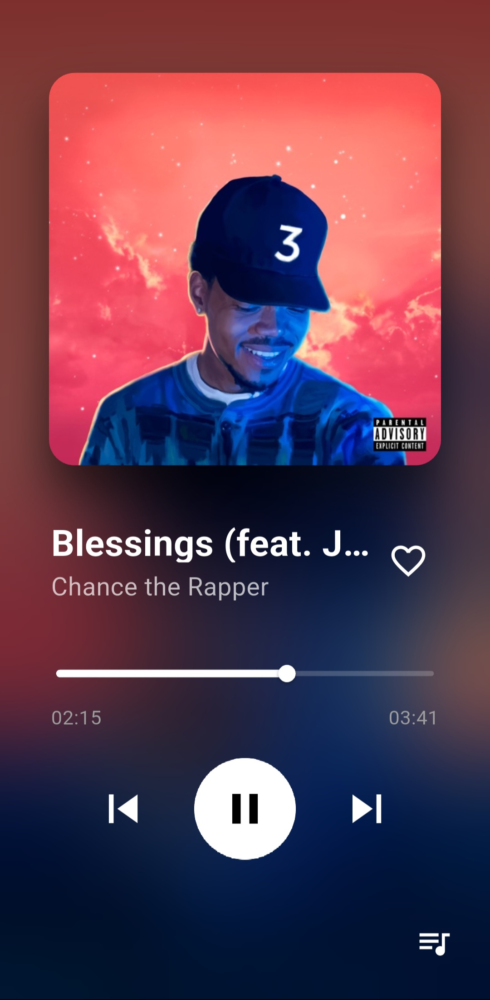

Syncro. è un lettore musicale fluido e intelligente sviluppato in Flutter. Gestione della coda avanzata, interfaccia minimal dark e performance audio native — tutto in un'unica app.

Ogni dettaglio è stato progettato pensando all'utente finale: semplicità in superficie, potenza nel motore.
Con un singolo tap sui tre puntini puoi scegliere se far partire un brano subito dopo quello in riproduzione (Riproduci dopo) oppure accodarlo in fondo alla scaletta (In fondo alla coda). Il controllo totale sulla tua playlist, senza interruzioni.
Un design scuro, pulito e senza distrazioni che mette la musica al centro. Tipografia ben calibrata, contrasti studiati e micro-animazioni fluide trasformano ogni interazione in un'esperienza coerente e piacevole — già su Android, presto anche su iOS.
Il motore audio di Syncro. sfrutta le API native di Flutter per garantire 60 fps costanti e transizioni istantanee tra i brani. Nessun lag, nessun glitch: la fluidità non è un bonus, è il requisito minimo.
Syncro. si connette in tempo reale per offrirti le ultime uscite musicali. Grazie all'integrazione diretta con il servizio API di iTunes, puoi cercare milioni di brani e artisti senza pesare sulla memoria del telefono. Tutto il catalogo globale, sempre a portata di click.
Il tema si adatta automaticamente alla cover del brano in riproduzione, estraendo i colori dominanti per creare un'atmosfera visiva unica per ogni canzone.
Syncro. nasce come progetto di sviluppo software per la piattaforma ministeriale Unica, dimostrando come la programmazione moderna possa incontrare un'esperienza utente di alto livello.
Syncro. unisce lo studio della programmazione a oggetti in Dart con l'ottimizzazione dell'esperienza utente (UX). Il progetto dimostra padronanza di pattern architetturali moderni applicati a un prodotto software reale e funzionante.
Gestione dello stato con Provider
Architettura reattiva basata sul pattern Provider per separare la logica di business dalla UI, garantendo un codice manutenibile e scalabile.
Asincronia dei flussi audio
Gestione di Stream e Future per il caricamento e la riproduzione audio in modo non-bloccante, con gestione degli errori e degli stati di caricamento.
Design system coerente
Definizione di un sistema di componenti riutilizzabili, palette cromatica e tipografia coerente applicata all'intera applicazione.
Flutter & Dart
Framework UI cross-platform by Google
just_audio / audio_service
Engine di riproduzione audio nativo
Provider + Riverpod
Gestione dello stato reattiva
Il Capolavoro non è solo un prodotto finito: è la dimostrazione di un percorso di apprendimento consapevole, in cui teoria e pratica si incontrano in un'opera originale e personale.
— Progetto per Unica, 2026
Visita il mio profilo GitHub per vedere altri progetti e contributi open source!
Apri il Repository